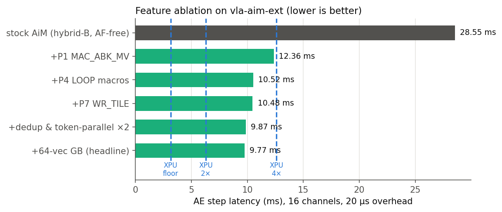
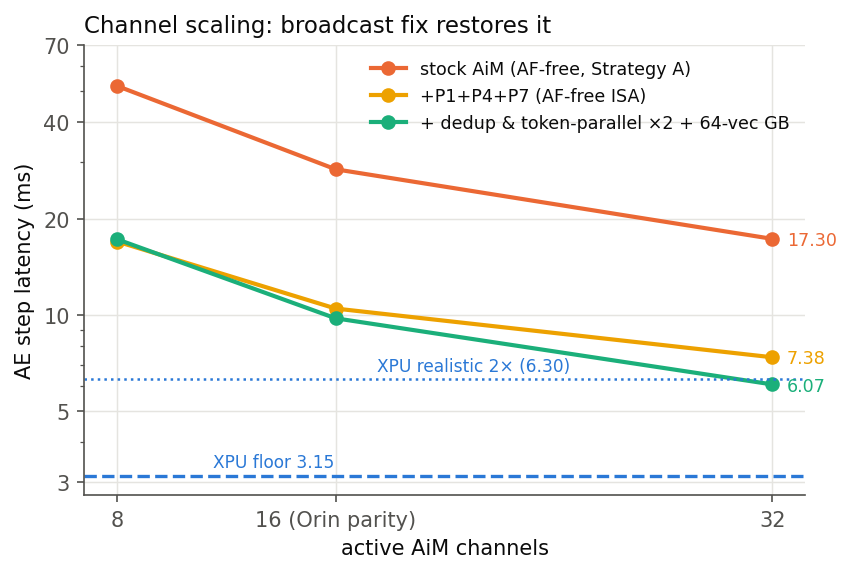

Eight Problems, Three AF-Free ISA Extensions: 28.5 ms → 9.77 ms per Step
Part III measured why stock LPDDR5-AiM loses on the π0 Action Expert: every in-bank fetch feeds one vector, one accumulator, one register mode. This page turns that breakdown into eight problem statements and implements the fixes on a simulator branch (vla-aim-ext) under an AF-free LPDDR-PIM premise (no in-DRAM activation function — the GEMV-only scope of every disclosed LPDDR-PIM, incl. Samsung’s LP5X-PIM Sim): three ISA/controller extensions (P1, P4, P7) + two software fixes, measured: 28.55 → 9.77 ms per step at Orin memory parity (2.9×), and 6.07 ms at 32 channels (1.9× the XPU’s theoretical bandwidth floor). P2 (in-memory softmax) and P8 (in-bank write-back), which require AF-class hardware, are documented as GDDR-AiM-only alternatives, excluded from the headline. With hybrid stale/fresh pipelining, all but the final fresh-KV denoising steps leave the robot’s critical path (378 ms cycle, 2.65 Hz).
Overview
Method: every extension is (a) motivated by a measured slice of the Part-II breakdown, (b) specified as encoding + datapath + storage cost, (c) implemented in the cycle-level simulator, (d) validated with unit traces, and (e) ablated cumulatively.
1Eight problems, each with its measured evidence
P1–P6 refine the classic AiM gaps against Part III’s numbers; P7–P8 emerged from our own traces. Reference: stock 16-channel layer = 1.43 ms AiM + 0.15 ms host (AF-free Strategy-A strawman: GeLU on the host).
| # | Problem | Measured evidence (per layer, 16 ch) | Fix (this page) | Verdict |
|---|---|---|---|---|
| P1 | GEMV-only compute: one GB vector, one accumulator/bank → no multi-token reuse | 4.22 M MAC16 commands = 46%; 73 k blocking RD_MACs; every weight re-fetched 63× | MAC_ABK_MV + accumulator file + big GB, RD_MACB | implemented — the big one |
| P2 | No reduction / softmax primitives → every partial exits via blocking reads; softmax round-trips 2.1 MB/layer to host | blocking+drain 10%; softmax host segment + SYNC each layer | RD_MAC_SUM, AF_SCALED, WR_AFLUT presets (exp, rsqrt) | excluded from headline — needs AF-class hardware absent on LPDDR-PIM (§3) |
| P3 | AiM/normal traffic mutual exclusion blocks concurrent use | structural (enables §8, not layer latency) | per-channel mode-partition CFR | implemented |
| P4 | Host-issued ISRs, no loop control → 17.7 k trace lines/layer, launch overhead per segment | step grows 32.9→37.9 ms over 5→50 µs overhead | LOOP n/ENDLOOP controller macros | implemented |
| P5 | fp16 MACs are area-hungry; INT8/MX would halve weight residency | — (success-rate impact unverifiable without GPU eval) | documented design only | not implemented, honest scope |
| P6 | No lane shuffle for RoPE’s pair rotation | RoPE ≈ 20 µs/layer on host < 1.5% post-P1 | — | rejected with numbers |
| P7 | 1 ISR per 32 B write: activation tile loads are 8.2 k single-column ISRs/layer | loads 0–5%; fixed floor after P1 | WR_TILE descriptor (1 ISR → opsize columns) | implemented |
| P8 | No result write-back path: PIM output cannot feed the next PIM op → gate⊙up forced to host, h tile reloaded (4.1 k writes/layer) | 2.1 MB/layer round trip + largest single load | COPY_MACBK (accumulators → bank row) | excluded from headline — the chain consumes a post-AF gate; without an AF unit the gate exits to the host anyway (§4) |
2P1 — MAC_ABK_MV: teaching one fetch to feed sixteen tokens
The core insight from Part III’s crossover: the XPU wins because its cache lets one weight read serve all 51 tokens. P1 gives AiM the same amortization, in-bank.
The idea, without any hardware
Strip away channels, banks, commands and buffers. A projection is just this: Y[t][j] = Σk X[t][k] · W[j][k], with S = 51 tokens, N = 2,048 outputs and K = 1,024 inputs. Three loops, and the only thing that separates stock from P1 is where the token loop sits relative to the read of W.
(a) STOCK ORDER — token loop outermost for t in 0 .. S-1: # 51 tokens for j in 0 .. N-1: # 2,048 outputs acc = 0 # ONE accumulator for k in 0 .. K-1: # 1,024 inputs acc += W[j][k] * X[t][k] # W[j][k] is read HERE Y[t][j] = acc # every W[j][k] is read S = 51 times: the weight loop is inside the token loop
(b) P1 ORDER — tile the token loop by V and sink it BELOW the read of W for t0 in 0 .. S-1 step V: # V = 16 → 4 tiles cover 51 tokens for j in 0 .. N-1: acc[0 .. V-1] = 0 # V accumulators, one per token in the tile for k in 0 .. K-1: w = W[j][k] # read ONCE … for i in 0 .. V-1: # … and reused V times acc[i] += w * X[t0+i][k] Y[t0 .. t0+V-1][j] = acc[0 .. V-1] # every W[j][k] is read ceil(S/V) = 4 times instead of 51
This is an ordinary register-tiling transform, and it is legal because the token dimension is a reduction-free outer product: token t’s result never depends on token t’s neighbours. What it costs is exactly two things: V partial sums must stay live while k advances, and V input vectors must be readable while w is held. A CPU or GPU does this in registers and cache without anyone noticing. Stock AiM cannot, because it has one accumulator per bank and one vector in the Global Buffer — so the inner i loop has nowhere to live, and the token loop is forced back to the outside. P1 is that storage, and nothing else.
How the algorithm maps onto the machine
| algorithmic term | where it lives in the hardware | stock | P1 |
|---|---|---|---|
inner k, 16 at a time | the 16 PU lanes fed by one 32 B column fetch | same — 16 multipliers, one column | |
rest of k (64 columns) | the column sweep the DMA unrolls from opsize=64 | same | |
j (outputs) | spread across banks × channels; 256 values of j advance at once, the rest become row-groups | same | |
X[t0..t0+V-1] | the Global Buffer | 1 vector (2 KB) | V vectors resident (32 KB) |
acc[0..V-1] | the per-bank accumulator | 1 slot (16 bit) | V slots (32 B) |
inner i loop | beats inside one command, driven by the PU clock | cannot exist | 16 beats per column fetch |
Y[...] = acc[...] | the drain to the host | RD_MAC, 1 value per bank | RD_MACB, V values per bank in one burst |
The problem in miniature: a toy machine, cycle by cycle
Everything above compresses into one question: which dimension of the GEMM does each piece of hardware parallelize, and which dimension is left to the command stream? To make that visible, shrink the machine until every operand fits on screen. Toy machine: 2 banks, each PU has 2 multipliers (one fetch = one 2-element k-chunk); the command bus issues one ISR per 4-cycle slot (nCCD). Toy workload: Y = X·Wᵀ with a 4×4 weight matrix (output rows r1–r4, K=4) and 3 tokens x1, x2, x3 — the miniature of the AE’s 12,800×1024-class projections against S=51 tokens.
Fig. 1b — The toy machine with full operand placement. Both sides use the identical weight layout (one (row, col) address means the same thing in every bank — that is what lets one broadcast command drive all banks). The only differences are storage: how many tokens the GB may hold, and how many results the PU may keep.
Stock, cycle by cycle. Bank 0 has one accumulator, so it must finish r1 for token 1 completely, drain, and only then touch anything else. Idealized trace (TMOD mode-switch and row-activation penalties omitted — they only make stock worse):
cyc | bus | GB | bank0 latch/acc | bank1 latch/acc 1 | WR_BIAS | - | - / acc=0 | - / acc=0 5 | WR_GB x1k01 | x1k01 | 9 | MAC row0,col0 | x1k01 | r1k01 / +r1k01∘x1k01 | r3k01 / +r3k01∘x1k01 13 | WR_GB x1k23 | x1k23 | ← x1k01 OVERWRITTEN (1-vector GB) 17 | MAC row0,col1 | x1k23 | r1k23 / y1[r1] DONE | r3k23 / y1[r3] DONE 21 | RD_MAC [BLOCKING — whole DRAM system stalls] 25 | WR_BIAS | | + row switch row0→row1 (PREA+ACT) 29 | WR_GB x1k01 | x1k01 | ← the SAME x1k01 enters the GB AGAIN 33 | MAC row1,col0 | x1k01 | r2k01 / ... | r4k01 / ... 37-45 | WR_GB x1k23, MAC row1,col1, RD_MAC → y1[r2], y1[r4] token 1 done @ ~cyc 48 cyc 49-96 : IDENTICAL script for x2 - banks re-fetch r1k01, r1k23, r3k01... AGAIN cyc 97-144 : IDENTICAL script for x3 - third fetch of the same 16 weights TOTAL: 144 cyc | 12 MAC cmds | 48 weight-elem fetches for 16 unique | 6 blocking drains | 6 row switches
The chokepoint is visible at cycle 20: y1[r1] is finished but has nowhere to live — one register per bank — so it must drain (blocking the machine) before r2 or x2 can start. Everything serial in this trace is downstream of that single register and the single GB vector: the token dimension is spent as command replays, and 2/3 of all fetch traffic is re-reading bytes the banks held 48 cycles earlier.
P1, cycle by cycle — same silicon, same weight layout; only the GB (3 vectors) and the accumulator (3-slot file) grew:
cyc | bus | GB tile | bank0 latch/acc-file | bank1 1 | WR_GB x1 | x1 | | ┌ tile fill 5 | WR_GB x2 | x1,x2 | | │ happens 9 | WR_GB x3 | x1,x2,x3 | | └ ONCE 13 | WR_BIAS | | - / [0,0,0] | [0,0,0] 17 | MAC_ABK_MV r0,c0 | | r1k01 latched ONCE | r3k01 ONCE ↳ beat1 ×x1k01→s1 (cyc19), beat2 ×x2k01→s2 (cyc20), beat3 ×x3k01→s3 (cyc21) 21 | MAC_ABK_MV r0,c1 | | ← bus issues next cmd WHILE beat 3 finishes: beats hide under nCCD ↳ r1k23 fetched once, 3 beats → [y1r1, y2r1, y3r1] ALL DONE 26 | RD_MACB | | s1,s2,s3 burst out | y*[r3] out 29 | WR_BIAS | | + row switch row0→row1 — ONCE, not once per token 33 | MAC_ABK_MV r1,c0 | | r2k01 ×3 beats | r4k01 37 | MAC_ABK_MV r1,c1 | | [y1r2,y2r2,y3r2] done | [y*r4] done 41 | RD_MACB | | all 12 outputs delivered @ ~cyc 44 TOTAL: 44 cyc | 4 MAC cmds | 16 weight-elem fetches, each unique weight EXACTLY once | 2 burst drains | 1 row switch
Fig. 1c — Toy timelines (coarse activity classes). Stock replays the whole script per token; P1 pays the tile fill once and sweeps each weight fetch across all tokens. Note beat 3 of each MAC_ABK_MV overlaps the next command’s issue slot — with 3 beats this hides perfectly under nCCD; the real design’s 16 beats must pipeline under subsequent fetches, and if an implementation cannot sustain that, the MAC segments dilate — exactly the occupancy dial priced in the table below.
Scaling the toy to the real machine. Nothing changes structurally — every quantity just gets bigger, and one new wrinkle appears: 51 tokens exceed the 16-slot tile, so the layer runs as ⌈51/16⌉ = 4 tile passes (the residual per-pass fill/drain rhythm that the dedup + token-parallel fixes of §7 then compress):
| Quantity | Toy | Real AE layer (16 ch) |
|---|---|---|
| banks × lanes per channel | 2 × 2 | 16 × 16 |
| K-chunks per weight row | 2 | 64 (K=1024, 32 B cols) |
| output rows / layer | 4 | 12,800 |
| tokens (tile passes) | 3 (1 pass) | 51 (4 passes of ≤16) |
| MAC commands / layer | 12 → 4 | 5.1 M → ~0.32 M |
| unique-weight fetch redundancy | 3× → 1× | 51× → 4× |
| ISR trace lines / layer | — | 55.5 K → 3.4 K (16.3×) |
| measured result | 144 → 44 cyc (3.3×) | 28.55 → 12.36 ms/step (2.3×, P1 alone) |
Seen this way, P1 is simply the GEMV → GEMM upgrade at the ISA level: stock computes W_chunk[16×16] × x[16] → y[16] per command; P1 computes W_chunk[16×16] × X[16×16 tokens] → Y[16×16] — with the M dimension realized as 16 beats in time on the existing multipliers rather than new silicon. Reuse per fetched byte goes from 1 to 16 FLOPs, which is exactly the command-count reduction; the remaining 4× re-fetch (4 tile passes) and the once-per-pass fills are what the software fixes of §7 attack next.
P1: one fetch, sixteen tokens, sixteen results
Fig. 11a — Same channel, same multipliers, same weight layout. Two storage additions (a 16-vector GB tile, a 16-slot accumulator file per bank) let the token loop move inside the fetch, and one burst-read replaces sixteen blocking drains.
The real ISR lines for the same projection (layer_ext_afree64_c16.trace): the tile is filled once, then each row-group is one MAC_ABK_MV and one RD_MACB, and the whole layer sits inside a LOOP so the host issues it once.
AiM LOOP 1 # P4: the controller replays the block; host launches once per layer # MV q_proj: K=1024 N=2048 G=2 rgroups=16 kchunks=1 cap=64 fill=True AiM WR_GB 64 0 0xff # tile fill: token 0 → group-0 channels (SW: token-parallel ×2) AiM WR_GB 64 0 0xff00 # token 26 → group-1 channels, interleaved # ... 16 vectors per group, filled ONCE for this projection (dedup: KV reuses this tile) AiM WR_BIAS 0 0xff AiM MAC_ABK_MV 64 0xff 100 # row-group 0: 64 fetches × 16 beats → 16 outputs × 16 tokens per bank AiM RD_MACB 16 0 0xff # one burst drains the 16-slot file of every bank AiM WR_BIAS 0 0xff AiM MAC_ABK_MV 64 0xff 101 # row-group 1 (row switch, once per 16 tokens instead of once per token) AiM RD_MACB 16 0 0xff # ... then the NEXT 16 tokens (4 groups cover 51), then the next projection AiM WR_TILE 16 0 0xffff 0 4900 # P7: one descriptor for a whole activation-tile write (was 880 WR_SBK lines) AiM ENDLOOP
The same two orders, in ISR terms
STOCK, per channel — the t loop is on the outside for t in 0..50: # 51 tokens WR_GB 64 # the one vector X[t] for g in 0..7: # row-groups = the j loop, 256 outputs at a time WR_BIAS # acc = 0 MAC_ABK 64: for c in 0..63: # the k loop, unrolled by the DMA 16 lanes -> acc RD_MAC # Y[t][j-group] # q_proj in the trace: 51 WR_GB, 408 MAC_ABK, 408 RD_MAC
P1, per channel — the t loop is tiled and its remainder sinks into the command fill: for v in 0..25: WR_GB 64 # X tile resident (26 tokens in this channel group) for vg in 0..1: # which slice of 16 the acc file holds (16 + 10) for g in 0..15: # row-groups (8 channels per group, so twice as many) WR_BIAS # acc[0..15] = 0 MAC_ABK_MV 64: for c in 0..63: # the k loop, one fetch each for i in 0..15: # the NEW i loop: 16 beats in the PU 16 lanes -> acc[i] RD_MACB # Y[16 tokens][j-group] in one burst # q_proj in the trace: 51 WR_GB, 64 MAC_ABK_MV, 64 RD_MACB (2 channel groups x 2 slices x 16 row-groups)
- The new loop is the
iloop, innermost, inside each column fetch, run by the PU — not by the host and not by the DMA. The row-group loop already existed in stock. - The column stays outside the beats. Fetch once, then sweep the 16 resident tokens. Reversed, every beat would need its own fetch and nothing would be saved.
vgselects which slice of 16 tokens the accumulator file is holding (26 tokens = one slice of 16 plus one of 10); it does not refill the tile.- Row-groups double from 8 to 16 because token-parallel ×2 leaves 8 channels per group: one sweep covers 16 banks × 8 channels = 128 outputs instead of 256. Each group holds a full weight replica and computes all 2,048 outputs for its own tokens.
- Deeper nesting, far less work. Loop depth costs nothing; trip count × per-iteration cost does. Per channel for q_proj: stock 51 × 8 = 408 sweeps → 26,112 column fetches, 408 drains, 408 row switches; P1 2 × 16 = 32 sweeps → 2,048 fetches, 32 drains, 32 row switches. That is 4 fetches per output produced versus 0.31. The
iloop added one level and removed a factor of 16 from an outer one. - Token-parallel is fetch-neutral per channel. Halving the tokens per group halves
vgand halving the channels doublesg, so with or without the split each channel issues 32 sweeps (the no-split trace: G = 1, rgroups = 8, 4 slices → 32). Its gain is the fill stream: each group pushes 26 vectors through its own pins instead of 51, and the two groups do it concurrently.
Running the clock again: one (16-token tile, row-group)
cycle command what happens useful? T+5 WR_BIAS 16 × 16 accumulator slots := 0 no T+6 TMOD array mode (32 idle) no T+38 PREA / ACT16 open weight row g in all banks; wait nRCDRDMAC no T+111 MAC_ABK_MV col 0 bank b fetches W[g][b][0..15] ONCE; 16 beats × x_0..x_15 YES ×16 tokens T+137 MAC_ABK_MV col 1 the PU (16 lanes @ 1 GHz) needs 25.6 DRAM cycles per column YES ×16 tokens ... T+1749 last column s_0..s_15 of every bank hold 16 finished outputs each YES T+1750 TMOD register mode (32 idle) no T+1782 RD_MACB 16 bursts, one DMA stall for 256 results/channel (≈ T+1850) no -------------------------------------------------------------------------------------------- ≈ 1,850 cycles for 16 tokens = 116 cycles per token, vs 432 on stock: 3.7× on this loop. The MAC term alone improves 2.5× (256 → 102 cycles per token): the fabbed PU is now busy 100 % of the time instead of 40 % (Fig. 6b). The rest comes from TMOD, row switches and drains happening 16× less often.
MAC_ABK_MV at MAC16 timing (4 cycles) and the composition adds the PU occupancy analytically: 16 beats of 16 lanes at AiM’s fabbed 1 GHz = 256 MACs = 16 ns = 25.6 DRAM cycles per column, i.e. +21.6 cycles per MAC_ABK_MV column on top of the simulated stream. That is why the 16-channel layer is 0.486 ms and not the simulator’s raw 0.219 ms. No multiplier is added; the PU is simply kept busy.Why 16, when there are 51 tokens? (measured)
Two knobs, only one of them fixed at 16. The command depth V — how many token vectors one MAC_ABK_MV sweeps, and therefore how many slots the accumulator file needs — is 16 in this design. The GB tile capacity is separate: 32 KB (16 vectors) measures 9.87 ms/step, 128 KB (64 vectors) measures 9.77, so the headline uses 128 KB.
V was chosen for hardware fit, then swept to check it. The generator now takes V as a parameter (default 16, so every earlier trace is byte-identical) and each depth was simulated at 16 channels; the composition charges the PU honestly, since one command asks a bank for V × 16 MAC and a 16-lane PU at 1 GHz needs V ns for it. The sweep at V = 16 reproduces the 9.77 ms headline exactly.
| V | token groups per channel group | padding | MV cmds/ch | TMOD/ch | row switches/ch | step ms | vs V = 16 | acc file B/bank |
|---|---|---|---|---|---|---|---|---|
| 1 | 26 | 1.00 | 260,712 | 10,480 | 5,320 | 33.48 | 0.29× | 2 |
| 2 | 13 | 1.00 | 132,468 | 5,333 | 2,672 | 18.15 | 0.54× | 4 |
| 4 | 7 | 1.08 | 70,458 | 2,819 | 1,409 | 12.77 | 0.76× | 8 |
| 8 | 4 | 1.23 | 39,564 | 1,554 | 780 | 11.19 | 0.87× | 16 |
| 13 | 2 | 1.00 | 20,448 | 848 | 416 | 8.88 | 1.10× | 26 |
| 16 | 2 | 1.23 | 19,782 | 791 | 389 | 9.77 | 1.00× | 32 |
| 26 | 1 | 1.00 | 10,224 | 430 | 208 | 8.15 | 1.20× | 52 |
| 51 | 1 | 1.96 | 9,336 | 368 | 171 | 12.14 | 0.80× | 102 |
16 channels, N = 4, 20 µs launch overhead, headline feature set (P1+P4+P7, 128 KB GB, dedup, token-parallel ×2). “Padding” is per channel group: token-parallel ×2 gives each group 26 tokens, so the quantity V must divide is 26, not 51. Work is conserved — MV commands × V is 265,824 beats per channel at every zero-padding depth. Full table, the no-token-parallel series and the assumptions are in the study’s 05_reports/vsweep_depth.md.
- Most of the gain arrives by V = 8–13. 1 → 8 is 3.0×; 8 → 13 another 1.26×; everything past 13 is worth at most 1.09× more.
- Above V = 8 the binding term is padding, not amortisation. Mode switches, row switches and drains are already ~20× down at V = 13. What separates 8.15 from 9.77 ms is that 26/16 = 1.23 of the MAC work at V = 16 multiplies padded slots.
- The measured optimum is V = 26 — the tokens each channel group owns — at 8.15 ms/step, 1.20× better than the shipped V = 16, for 52 B of accumulator file per bank instead of 32 and no extra GB. Without token-parallel the same rule gives V = 51 and 8.68 ms (1.17×).
- Depth must match the group, not the token count. V = 51 with token-parallel ×2 is the worst configuration above V = 4 (12.14 ms): half of every 51-slot file sits idle.
- So V = 16 is defensible, not optimal. It is what the hardware likes — power-of-two slot index, and one
RD_MACBburst is exactly one 32 B GPR word, the format stockRD_MACalready produces — and it leaves 1.20× on the table. A V-matched design pays a wider slot index and a burst count that no longer equals the GPR width.
Where the time goes as V grows
| V | MAC | GB fill | TMOD | row | other | AiM ms | overhead |
|---|---|---|---|---|---|---|---|
| 1 | 0.652 | 0.069 | 0.210 | 0.110 | 0.763 | 1.803 | 64 % |
| 4 | 0.282 | 0.069 | 0.056 | 0.029 | 0.217 | 0.653 | 57 % |
| 8 | 0.317 | 0.070 | 0.031 | 0.016 | 0.132 | 0.565 | 44 % |
| 13 | 0.266 | 0.070 | 0.017 | 0.009 | 0.076 | 0.437 | 39 % |
| 16 | 0.317 | 0.070 | 0.016 | 0.008 | 0.076 | 0.486 | 35 % |
| 26 | 0.266 | 0.070 | 0.009 | 0.004 | 0.048 | 0.396 | 33 % |
| 51 | 0.476 | 0.069 | 0.007 | 0.004 | 0.062 | 0.618 | 23 % |
Milliseconds per layer per channel, 16 channels; the MAC column carries the PU charge of V ns per fetch. Same runs as the table above.
- What collapses: the per-fetch overheads, exactly as 1/V. Mode switches 0.210 → 0.009 ms, row switches 0.110 → 0.004. By V = 13 they are together 6 % of the layer and there is little left to win.
- What does not: the activation broadcast (0.070 ms, flat — every token vector must cross the external pins into the GB once per projection whatever the command depth; 18 % of the layer at V = 26, the largest remaining overhead, and the target of dedup, token-parallel and Part IV §6), and the drain and bias stream (most of the residual: one result per token per row-group leaves the bank however it is packaged, so
RD_MACBbursts andWR_BIASscale with tokens × row-groups, not with 1/V). The rest of the residual is the wait after each row activation, refresh and host barriers. - So the overhead share falls from 64 % to 33 % and stops, with the floor set by moving activations in and results out. V = 51 has the lowest overhead share (23 %) and the worst time above V = 4: padded multiplies inflate the MAC term faster than the bookkeeping shrinks.
- Hardware cost of depth: the accumulator file is 2 B per slot per bank — 32 B/bank (512 B/channel) at V = 16, 52 B/bank (832 B/channel) at V = 26. The GB does not grow, since the 128 KB tile already holds 26 vectors. A non-power-of-two depth instead costs decode tidiness: a 5-bit slot index and a
RD_MACBthat no longer bursts exactly one 32 B GPR word per slot.
Hardware overhead: what this actually costs in silicon
Costed against the real AiM PU (SK hynix architecture doc / ISSCC’22: 16 bf16 multipliers + fused adder tree + one accumulator register + AF block per bank; 2 KB GB SRAM per channel; fixed-function, no programmable control):
| Addition | Hardware delta | Cost class |
|---|---|---|
| accumulator file | 15 extra 16-bit registers + 4-bit slot mux behind the existing adder tree (≈240 FFs/PU) | trivial — a few % of PU logic, «0.1% of die; no timing-path change |
| RD_MACB | DMA-side slot sequencer; reuses the RDMAC16 read path | trivial — zero PU change |
| bigger GB | 2 KB → 32 KB SRAM/channel — measured nearly sufficient: with dedup + token-parallel, the 16-vector GB gives 9.87 ms/step vs 9.77 with 128 KB (+1%) | modest — ~0.1–0.5 mm² in DRAM-periphery logic, ~1%-class of an LPDDR die [estimate]; the 64-vector version buys only 2% |
| MAC_ABK_MV datapath | 32 B operand latch + 4-bit vector sequencer + multiplier throughput (the one real cost) | a price/performance dial, below |
| PU multiplier array (@ AiM’s fabbed 1 GHz) | Extra area | MV occupancy | AE step | vs stock | vs XPU-2× |
|---|---|---|---|---|---|
| 16 lanes — AiM exactly as fabbed (our design) | zero | 25.6 cyc | 9.77 ms | 2.9× | 0.65× |
| 32 lanes (2×) — option | ~2× array | 12.8 cyc | 6.92 ms | 4.1× | 0.91× |
| 64 lanes (4×) — option | ~4× array | 6.4 cyc | 5.49 ms | 5.2× | 1.15× |
| 128 lanes (8×) — wasteful | ~8× array | 4.0 cyc (nCCD floor) | 4.96 ms | 5.8× | 1.27× |
Why the multiplier width matters at all. One MAC_ABK_MV asks a bank for 16 lanes × 16 vectors = 256 MAC. Pipelining does not help: a pipelined PU already sustains one 16-lane dot-product per cycle, so the 256 MACs are a throughput requirement, not a latency one. At AiM’s fabbed 1 GHz a 16-lane PU needs 16 ns — 6.4× the 2.5 ns column slot — so the controller throttles and the command occupies 25.6 cycles. Widening the array shortens that linearly until 128 lanes, where nCCD becomes the limiter again and 16× is the ceiling this ISA can reach.
The vector count is already optimal. With a 16-lane PU, any V ≥ 3 vectors per command saturates it at 1.6 cycles/vector (vs stock’s 4.0) — so the free 2.5× on the MAC term needs only V = 3. We use V = 16 not for arithmetic but because it divides the WR_BIAS/RD_MACB drains, GB refills and row activations by 16 — the overhead terms that were 43% of the stock layer.
RD_MACB + the GB tile, ~1% of die) eliminate the WR_BIAS/RD_MAC/TMOD/row-thrash storm all by themselves: 2.9× over stock with zero added multipliers, and 13.9× over today’s measured stack. Widening the array is an option, not part of the design: 2× recovers EDP parity and 4× clears the realistic XPU bound, but §8 shows the end-to-end gap between 16 and 64 lanes is only 1.02× — once the expert is overlapped it is off the critical path, so paying 4× the multiplier area for 2% of system throughput is a poor trade. Feasibility: P3-LLM’s synthesis takes the same 16→64 multiplier step for +9% of PCU area (7.7→8.4 mm²) — the multiplier array is not the dominant PCU term; their larger +17.5% total comes from format decoders and register files that we do not add. Samsung’s Aquabolt-XL fabbed a far heavier per-bank programmable PCU (CRF/GRF/SRF) in HBM2 at only +5.4% device power. Our deltas keep AiM’s philosophy: no cell-array or sense-amp changes, no programmable control, no numeric-format change, ISR-only interface extension. LPDDR-specific risk: mobile thermal may cap the PU clock — at 500 MHz the 64-lane point degrades to the 32-lane row above.What each piece of the fix removes
| Per channel, per layer (16 ch) | stock | P1 + P4 + P7 + dedup + tp2 | ÷ | removed by |
|---|---|---|---|---|
| MAC column commands (MAC16) | 263,976 | 19,782 | 13.3× | P1: 16 tokens per fetch (÷16, minus tile padding 64/51) |
| in-bank weight traffic | 135 MB | 10.1 MB | 13.3× | P1: weights fetched 4× per layer instead of 63× |
| GB column writes (WRGB) | 120,360 | 27,824 | 4.3× | P1 (tile filled once per K-chunk, not per row-group) + dedup (Q/KV, gate/up share a tile) + tp2 (each channel group takes half the tokens) |
| TMOD mode switches | 10,945 | 791 | 13.8× | P1: two per (16 tokens, row-group) instead of two per (token, row-group) |
| row switches (PREA) | 5,113 | 389 | 13.1× | P1: a row is opened once per 16 tokens |
| blocking drains | 4,590 (16 results each) | 762 (256 results each) | 6.0× | P1 RD_MACB: one stall per 16 tokens; each moves 16× the data |
| ISR lines from the host | 17,717 (6 launches) | 3,537 (1 launch) | 5.0× | P1 (fewer commands) + P7 WR_TILE (880 → 2 lines) + P4 LOOP (one launch per layer) |
| simulated cycles | 2,283,344 | 350,371 | 6.5× | everything above |
| AiM time per layer (with PU occupancy) | 1.427 ms | 0.486 ms | 2.9× | the 16 beats are charged: +21.6 cycles per MV column |
| AE step, 16 channels, N = 4 | 28.55 ms | 9.77 ms | 2.9× | 18 layers × (AiM + host segments); host launch once per layer (P4) |
Counters: sim_cache.json[layer_a_only_c16] and sim_cache_paper.json[layer_ext_afree64_c16]; totals summed over channels and divided by 16. Hardware added: 30 KB of GB SRAM per channel, 32 B of accumulator file per bank plus a select mux, a decode entry for RD_MACB/WR_TILE, and a KB-scale macro buffer in the SoC’s memory controller for LOOP. No multiplier, no clock change (Part IV §2 prices it).
3P4, P3, P7, P8 — the supporting cast
P4 — LOOP n … ENDLOOP controller macros
Samsung’s HBM-PIM stores micro-kernels in a command register file and replays them with a zero-cycle JUMP; we add the trace-level equivalent: the controller expands a buffered ISR block n times with zero per-iteration host issue. Command issue timing is unchanged by design (the DMA still paces one command per cycle, exactly as a controller draining its macro buffer would) — verified: a 10×-unrolled body and its LOOP form simulate to the identical 6,644 cycles. What changes: a layer shrinks from 17.7 k host ISRs to ~3.5 k (5×), launch overhead amortizes once per layer instead of once per host segment, and a self-running denoising step (with an Euler MAD at the DMA) becomes plausible.
P3 — per-channel mode partition (CFR 3)
A 32-bit mask CFR marks each channel AiM-mode or conventional-mode, scoping Part III’s mutual exclusion to within a partition. Its value is not layer latency — it is the enabler for §8: streaming next-observation KV into masked channels while the others denoise, and letting the XPU use idle AiM capacity as ordinary memory.
P7 — WR_TILE descriptors
Stock activation loads issue one ISR per 32 B column (8.2 k/layer). WR_TILE opsize GPR mask bank row lets the DMA unroll a whole tile write from one descriptor — the write stream itself already paces at bus rate (unit trace: 286 = 286 cycles), so the win is command-stream compression (64×) and freeing the decode slot the P1-improved layer now notices.
P8 — COPY_MACBK write-back (GDDR-AiM alternative — excluded from the headline)
Excluded under the LPDDR-PIM premise: the in-bank gate⊙up chain consumes a post-AF gate. Without an AF unit the gate tile must exit to the host for GeLU regardless, so the write-back path saves nothing — the AF-free headline computes GeLU·gate⊙up on the host and re-uploads h (priced in §6). Design kept for AF-equipped substrates: stock PIM results can only exit through GPRs toward the host, so gate⊙up ran on the host and the h tile (the layer’s largest load, 4.1 k writes) was re-uploaded for down-proj. COPY_MACBK writes the (post-AF) accumulator file into a bank row (WRCP timing class): gate and up results land in adjacent banks, EWMUL multiplies them in place, and down-proj consumes h without the host ever seeing it.
P2 — softmax without leaving the memory (GDDR-AiM alternative — excluded from the headline)
Stock attention ships 8×51×867 fp32 scores (2.1 MB/layer) to the host for softmax and ships probabilities back. Three small primitives close the loop in-memory:
| New ISR | Datapath addition | Role in softmax(x)i = exᵢ/Σexₖ |
|---|---|---|
| WR_AFLUT opsize | host-programmable LUT tables (16-entry fp16 + interpolation, same hardware as gelu) | loads exp / rsqrt / reciprocal presets |
| AF_SCALED mask | AF unit gains a per-channel scalar multiplier | numerators exᵢ in the accumulators; later x·(1/Σ) rescaling; also finishes RMSNorm (x·rsqrt(σ²)) |
| RD_MAC_SUM GPR mask | 15-adder fp16 tree at the channel PU | Σ over the 16 banks in one 32 B read instead of sixteen |
# attention softmax, stock (per layer): scores -> host -> probs [2.1 MB, 1 host segment + SYNC] RD_MAC ×1632 [each blocking] → SYNC → host softmax → WR_GB probs ×22,440 cols # extended: never leaves the channel MAC_ABK_MV 16 0xffff 4000 # scores into accumulator file AF_SCALED 0xffff # exp preset -> numerators in AF regs RD_MAC_SUM 0 0xffff # denominator partials, one word per channel COPY_MACBK 0xffff 0 6000 # stash exp(s) rows in a bank (P8!) COPY_BKGB 55 0xffff 0 6000 # probs tile back to GB for the context GEMM AF_SCALED 0xffff # x * (1/sum) applied at context output
The softmax host segment and its SYNC disappear from every layer; blocking score reads drop ~4×. Numerics caveat kept honest: fp16 LUT exp + fp16 adder tree is unevaluated against task success rate (no GPU for policy rollouts) — flagged as future work alongside P5.
4Validation
- Unit traces (per feature): MV batch vs stock batch on identical math — 5,388 vs 25,639 cycles; LOOP macro vs unrolled — 6,644 = 6,644 (timing-neutral, as specified); WR_TILE vs 64 single writes — 286 = 286 (stream-bound, ISR count 1 vs 64); P2/P3/P8 smoke trace passes.
- Legacy regression: the upstream all-ISR test and micro-benchmarks produce byte-identical cycle counts on the extended branch (689 / 583 / 337,363) — the extensions change nothing unless used.
- Bandwidth sanity: during MV MAC phases each channel sustains 512 B per column slot = 204.8 GB/s internal — the datapath bound, reached.
- Fairness fix found on the way: the upstream opcode-to-command tables had EOC/SYNC swapped relative to the enum (benign until you append opcodes) — corrected before adding ours.
5Ablation: what each feature buys, and why

| Tier | 8 ch | 16 ch | 32 ch | Why it gets better |
|---|---|---|---|---|
| stock AiM (best mapping, AF-free) | 51.98 | 28.55 | 17.30 | Part III baseline: fetch-per-token amortization; GeLU on host |
| +P1 MAC_ABK_MV | 18.86 | 12.36 | 9.26 | MAC commands ÷4, blocking reads ÷16 per drain, weights on the parallel-bank path: the 44%+11%+16% slices collapse |
| +P4 LOOP macros | 17.02 | 10.52 | 7.42 | launch overhead once per layer, not per segment; host-ISR stream 16× smaller |
| +P7 WR_TILE | 16.97 | 10.48 | 7.38 | activation-tile loads compress 64× in command count; small but free |
| +dedup + token-parallel ×2 (SW, 32 KB GB) | 17.31 | 9.87 | 6.19 | §7 below — the broadcast fix; 16-vector GB |
| +64-vector GB (128 KB, headline) | 17.25 | 9.77 | 6.07 | bigger tile → fewer fill passes; only +2% over the 32 KB GB |
| token-parallel ×4 (kept negative) | 21.64 | 11.88 | 6.99 | §7: blocking RD_MACB drains serialize across groups |
Step latency in ms, 20 µs launch overhead. An N=4 inference at 16 ch: stock 114.3 ms → extended 39.1 ms; N=10: 285.5 → 97.7 ms (KV-load 74 µs amortizes over the cycle).
6The last bottleneck: activation broadcast — and its sweet spot
After P1+P4+P7, the layer profile flips: WR_GB activation streaming dominates at 61% of the AiM layer — and it does not scale with channel count, because the same token tile is broadcast serially into every channel’s GB through its 12.8 GB/s port. The bound is physical: you can only (a) send fewer bytes, (b) send different bytes to different channels, or (c) add GB write ports (hardware).
Two software fixes, measured
- Dedup: Q/KV share the same normalized input tile, as do gate/up — fill the GB once per distinct input instead of once per op. Pure trace-scheduling.
- Token-parallel channel groups: split the 51 tokens (and the 408 attention vectors) across G channel groups, replicating the weights per group — a capacity trade (G × 623 MB out of the 64 GB LPDDR pool) that hardware designers get for free. Each group streams only its share, concurrently on independent channel buses; interleaved ISR emission lets the groups’ controllers overlap despite the single in-order DMA.
| Config | WR_GB ms/layer | step @16 ch | step @32 ch |
|---|---|---|---|
| P1+P4+P7 (pre-fix, 32 KB GB) | 0.155 | 10.48 | 7.38 |
| + dedup + G=2 groups (32 KB GB) | 0.078 | 9.87 | 6.19 |
| + 64-vector GB (headline) | 0.070 | 9.77 | 6.07 |
| + dedup + G=4 groups | 0.036 | 11.88 | 6.99 |
RD_MACB, and blocking instructions stall the single in-order DMA globally. Four groups quadruple the serialization points and the stalls more than eat the fill savings (11.88 vs 9.77 ms at 16 ch). Token-parallelism has a sweet spot at G=2; going further needs per-group DMA queues or non-blocking accumulator reads (a P4-class controller extension), multi-port GBs, or activation compression — the concrete hardware agenda this measurement produces.
Net: 9.77 ms at Orin parity — 2.9× over the best stock mapping and 13.9× over the measured stack, with zero added arithmetic — and 6.07 ms at 32 channels.
7System view: hiding the Action Expert entirely
With the AE at ~20 ms per N=4 inference, the system-level picture changes qualitatively (Orin timeline: vision 110 ms + VLM 258 ms):
| AE implementation | AE N=4 (ms) | End-to-end (ms) | Control rate | AE share |
|---|---|---|---|---|
| measured unoptimized stack (paper) | 543 | 920 | 1.1 Hz | 59% |
| optimized XPU (2× floor) | 25.2 | 393 | 2.5 Hz | 6.4% |
| stock AiM, 16 ch | 146.9 | 515 | 1.9 Hz | 29% |
| extended AiM, 16 ch, serial | 39.1 | 407 | 2.5 Hz | 9.6% |
| extended AiM + full-stale overlap (upper bound, SR-risky) | 39.1 (hidden) | 368 | 2.7 Hz | ~0% |
| extended AiM + hybrid stale/fresh overlap | 39.1 (19.5 exposed) | 388 | 2.58 Hz | 5.0% |
Fig. 3 — Macro-scale concurrency. Serial vs. hybrid stale/fresh pipelined control cycle: the coarse early denoising steps hide inside the VLM window on an 8-channel AiM partition; only the final fresh-KV steps (19.5 ms at N=4) remain on the critical path — 97% of the full-overlap win, inside the staleness regime V-AEFusion measured as SR-safe.
- Stale-KV pipelining (needs P3) — with an honest staleness budget. Denoise chunk t on AiM while the XPU runs vision+VLM on the next observation. Because AE (39 ms) « VLM (258 ms) the AE could hide completely — but running every step stale is SR-risky: V-AEFusion’s own ablation (paper Table 7) holds at ~5 of 10 stale steps (−0.3% SR) and collapses beyond ~6 (88→80→50→10% as stale steps go 5→6→7→9). The adopted scheme is hybrid: the first ⌈N/2⌉ coarse steps run stale inside the VLM window, the last ⌈N/2⌉ on fresh KV — at N=4 the exposed fresh tail is 2×9.77 = 19.5 ms ⇒ cycle 388 ms, 2.58 Hz, keeping 97% of the win inside the measured-safe regime. Our P3 address-mapped KV streaming beats the GPU version structurally: fresh K/V rows land in banks layer-by-layer as the VLM computes them, so fresh conditioning can begin before prefill finishes. Note only vision context is ever stale — the state token re-embeds fresh every step.
- Contention: static 8+8 channel partition. During the overlap, 8 channels in AiM mode run the AE at 16.97 ms (still « the window) while the XPU keeps 8 channels = 102.4 GB/s — far above the compute-bound VLM’s ~10–20 GB/s demand. System requirement: the XPU’s address interleave is confined to its channel group during the window (memory-controller carve-out, statically schedulable in a deterministic control loop). KV double-buffering: 2×15 MB regions in 4 GB banks, row-pointer flip at the cycle boundary.
- Dual-use memory: the AiM channels ARE the platform LPDDR. With P3 partitioning the XPU keeps full-bandwidth access for the 95% of the cycle the AE is idle — the difference between “adding a PIM accelerator” and “the memory you already have can denoise.”
- Micro-pipelining: host post-processing of layer ℓ overlaps AiM’s layer ℓ+1 (disjoint data) — a further −10% if wanted.
8Energy, and what a fair baseline looks like
Latency is half the deployment story on a battery-powered robot. Per-command energy follows the CENT power calculator shipped with the simulator (GDDR6-AiM constants, conservative for LPDDR5): array/activate/MAC energies from command counts, DQ at 5.5 pJ/bit, controller and standby power, and an AE-phase GPU power of 20 W [ASSUMPTION; the paper measures 20–40% SM utilization; swept 15–30 W].
Energy per step

- Why stock AiM loses on energy too: 35.5 ms of standby burn (127 mJ) plus per-command overhead traffic. Slowness is itself an energy cost.
- Honest caveat: against the theoretical-floor XPU, extended AiM is ≈1.41× worse on energy — in-DRAM fp16 MACs cost more per op than tensor cores (3.5 pJ/MAC here), and MV still re-fetches weights per tile pass. A 64-slot accumulator file (future work) would cut the dominant MAC term further. Combined figure of merit today: 0.65× latency × 1.17× energy ≈ 0.75× energy-delay product against that hypothetical rung (269× against the measured stack) — plus the freed XPU.
What makes a baseline fair
- What a fair baseline is NOT: more LPDDR. The XPU shares the memory system, and its floor scales perfectly with channels (32 ch ⇒ 1.57 ms) while the AiM curve scales sub-linearly — adding channels helps the baseline more than the design. The legitimate framings are the three-tier baseline (vs measured 543 ms stack ⇒ 14×; vs realistic 2× ⇒ 0.65×; vs theoretical floor ⇒ 0.32× at 16 ch, 0.26× at 32 ch — rung definitions in Part II §3), energy & EDP (above), and iso-platform (same channels, plain vs AiM LPDDR; marginal cost = PIM die area).
- Iso-cost scale-down (Orin NX, 102.4 GB/s = 8 channels): NX AE floor 6.30 ms, realistic 2× 12.61 ms. Our best 8-channel config (16.97 ms, P1+P4+P7; token-parallel is counter-productive at 8 ch) is 0.74× faster than the realistic NX baseline and matches AGX-class realistic latency on a ~40%-cost module — with the AE hidden behind the VLM under stale-KV overlap, which an XPU-only NX cannot do.
The deployment-baseline matrix
The platforms robots actually deploy VLAs on are all LPDDR-based — Orin NX (102.4 GB/s; inside shipping Unitree G1 humanoids), AGX Orin (204.8 GB/s; the research workhorse), and Jetson AGX Thor (256-bit LPDDR5X, 273 GB/s; the GR00T-reference humanoid flagship). Cells are our speedup× / energy× at each platform’s own channel budget (ours: 16.97 ms / 159 mJ at 8 ch; 9.77 ms / 166 mJ at 16 ch, 186 mJ at Thor’s 40 W; host power 15 / 20 / 40 W per platform, Thor’s measured AE ≈ 36 ms/step from the paper’s 246 ms end-to-end — assumptions tagged in the study):
| Baseline tier (ladder defs) | Orin NX (8 ch) | AGX Orin (16 ch) | Thor (16 ch) |
|---|---|---|---|
| measured stack | n/a | 13.9× / 20.1× | 3.7× / 8.8× |
| realistic 4× | 1.48× / 2.97× | 1.29× / 2.09× | 0.97× / 2.47× |
| realistic 2× | 0.74× / 1.62× | 0.65× / 1.17× | 0.48× / 1.35× |
| theoretical floor | 0.37× / 0.94× | 0.32× / 0.71× | 0.24× / 0.79× |
The full deployment-platform survey — the landscape table, per-platform AE ladders, and the compiled-stack rung — is Part II.
9How this differs from prior in-DRAM designs
Several published designs also reuse an in-bank fetch across more than one activation vector. To claim novelty honestly we did not argue from their papers — we re-implemented each mechanism on our own substrate and measured it: same machine (LPDDR5-AiM, 16 channels), same workload (π0 action expert, S = 51), same weight layout, the same stock attention path, and none of our software or controller work (no LOOP, no dedup, no token-parallel). What is left is the ISA mechanism alone. Each model lives on its own branch (prior/cent, prior/dots, prior/p3-llm, prior/lp-spec).
| design | what it adds | step ms | vs stock | energy mJ | MAC cmds/ch | acc/bank | GB/ch | multipliers |
|---|---|---|---|---|---|---|---|---|
| Stock AiM | 1 vector, 1 accumulator | 28.55 | 1.00× | 434 | 263,976 | 2 B | 2 KB | 16 |
| CENT ASPLOS’25 | 32 addressable accumulator registers, no multi-vector command | 27.09 | 1.05× | 427 | 263,976 | 64 B | 2 KB | 16 |
| DOTS DATE’25 | 8 result latches; weight row held open across 8 tokens (GB writes charged) | 31.77 | 0.90× | 499 | 263,976 | 16 B | 4 KB | 16 |
| DOTS, their claim | same + split read/write I/O bus credited with hiding every GB write | 20.52 | 1.39× | 313 | 263,976 | 16 B | 4 KB | 16 |
| P3-LLM arXiv’25 | throughput-enhanced PCU: one row-buffer slice reused by 2 inputs | 18.63 | 1.53× | 316 | 158,376 | 4 B | 4 KB | 16 |
| LP-Spec ICCAD’25 | MPU: bank burst broadcast to 4 ALUs (depth 4) | 14.81 | 1.93× | 279 | 103,464 | 8 B | 8 KB | 64 |
| Ours (P1) | MAC_ABK_MV: one fetch, 26 beats, 26-slot file, burst drain | 15.15 | 1.88× | 261 | 57,000 | 52 B | 52 KB | 16 |
16 channels, N = 4, 20 µs launch overhead. Every row uses the stock attention path and no P4/SW, so the comparison is the projection mechanism only; our complete design (this page’s headline) reaches 8.19 ms. Data: 04_data/prior_art.csv, write-up in 05_reports/prior_art_models.md.
What the measurements say
- Accumulators alone are nearly worthless (CENT, 1.05×). More result registers remove drains and mode switches, but every weight column is still fetched once per token. CENT has the register file our design needs and spends it on one vector at a time.
- Latches without fetch reuse are worth little, and can lose (DOTS, 0.90–1.39×). Holding the row open across 8 tokens removes row switches and drains, but each token still costs its own MAC command, so the 16× internal bandwidth is still spent 8 times on the same data. The row-major order DOTS needs also re-fills the Global Buffer per (row-group, token): charged, that is slower than stock; only its split read/write bus rescues it.
- Depth bought with arithmetic works — it is the only row that beats us (LP-Spec, 1.93×). Four ALUs per bank pair give depth 4 with a short command, so the PU never throttles. It costs 4× the multipliers: 16.9 % of the die and 26.5 % of the density in the original paper.
- Depth bought with clock works too, and less (P3-LLM, 1.53×). Depth 2 from a PCU clocked at tCCDS. Its published speedups also need INT4/INT8 operands and a doubled command rate; our fp16, JEDEC-timing premise credits neither.
- Depth bought with storage matches all of them at zero arithmetic (ours, 1.88×). Within 2 % of the 4×-multiplier design on latency, with 4.6× fewer MAC commands than any stock-depth design, the fewest mode switches, and the lowest energy of any row (261 mJ: 6 % under LP-Spec, 17 % under DOTS’s best case).
Depth is the differentiator, once everything else is equal
Give every mechanism our controller macros, our software mapping and a multi-vector attention path, and the ranking is exactly the ranking of depth:
| depth reached | by | step ms in our full design |
|---|---|---|
| 1 | stock AiM, CENT | 28.55 |
| 2 | P3-LLM | 17.98 |
| 4 | LP-Spec | 12.76 |
| 8 | DOTS | 11.27 |
| 26 | ours | 8.19 |
Series & sources
- Part I — Anatomy of a flow-matching VLA: π0 module by module
- Part II — Deployment platforms & baselines: where robots run VLAs, and what counts as fast
- Part III — LPDDR5, stock AiM, and why the offload loses 4.5×: the problem, quantified
- Part IV (this page) — Our ISA extensions: 28.55 → 8.15 ms per step, and how they differ from prior designs.
All extensions implemented on the vla-aim-ext branch of arkhadem/aim_simulator @ 0f28a07 (exported as patches); ablation from cycle-accurate simulation of generated ISR traces, composed with an analytic Orin host model (tCK = 0.625 ns, documented assumption; ratios are tCK-independent). Honest scope: analytic host, no task-success-rate evaluation (CPU-only study), fp16 LUT numerics unverified, P3 concurrency analyzed rather than dual-master-simulated.